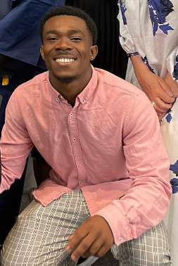

Pierre S. Mangah

Summary
I am a hardworking and dedicated individual with experience software development and data analysis seeking a challenging position to apply my expertise in solving complex problems and driving innovation.
Education
- Bachelor of Science in Computer Science at North American University,2024
Work Experience
North American University, Stafford, TX 77477
Admissions Call Center Representative, january 2022 - May 2023
- Responded to inquiries from prospective students and parents via phone, email, and live chat, providing information about admission requirements, programs, and campus life.
- Utilized customer relationship management (CRM) software to track and manage student interactions, ensuring timely follow-up and accurate documentation of conversations.
Twenty four 7, Portland, OR 97232
Software and game Developper, May 2023 - present
- Developed and maintained software applications using Python, Java, and JavaScript.
- Conducted unit testing and debugging to ensure software quality.
- Assisted in the creation of technical documentation and user manuals.
Skills
-
Proficient in Python, Java, C++, and JavaScript
- Familiar with web development using HTML, CSS, JavaScript, and React
- Strong problem-solving, critical thinking, and communication abilities
- Effective teamwork and collaboration skills
Awards
- Employee of the Month - NAU. (August 2021)
Other